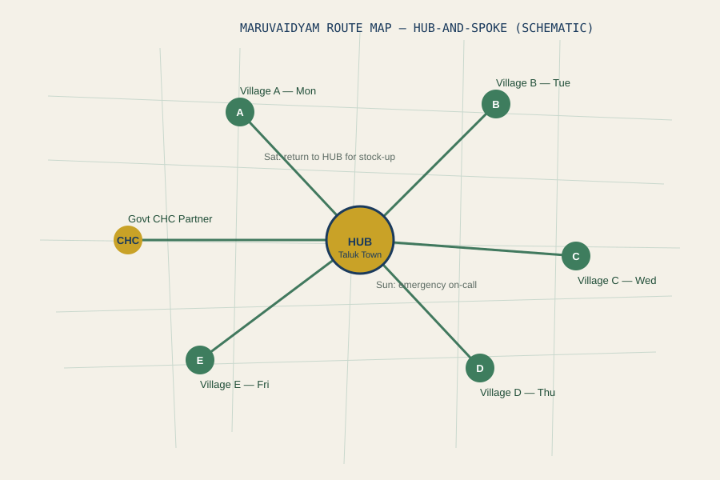
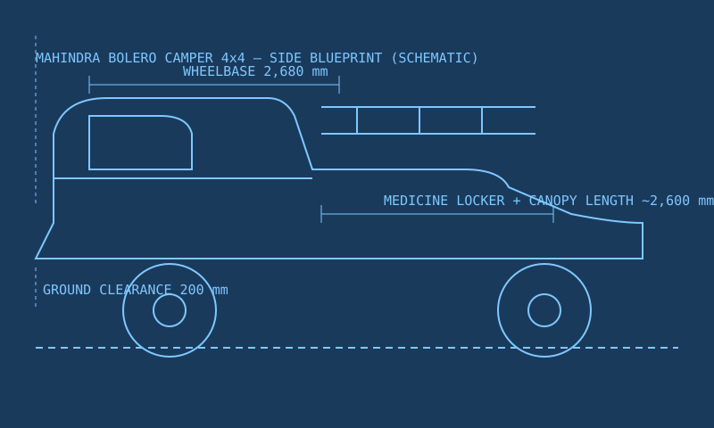
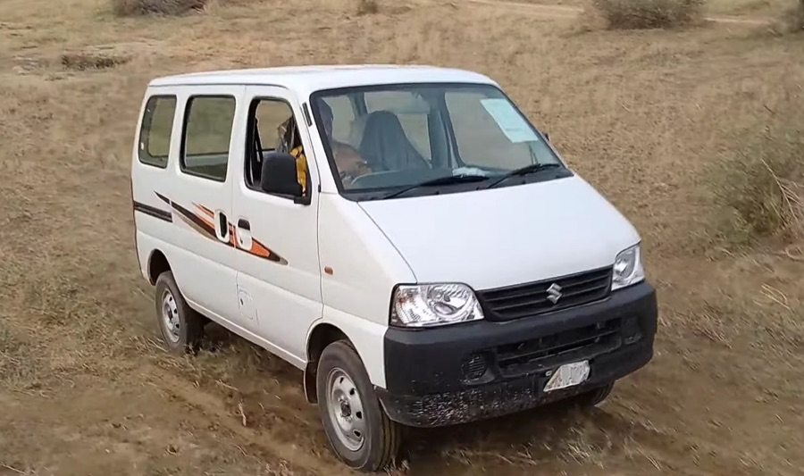
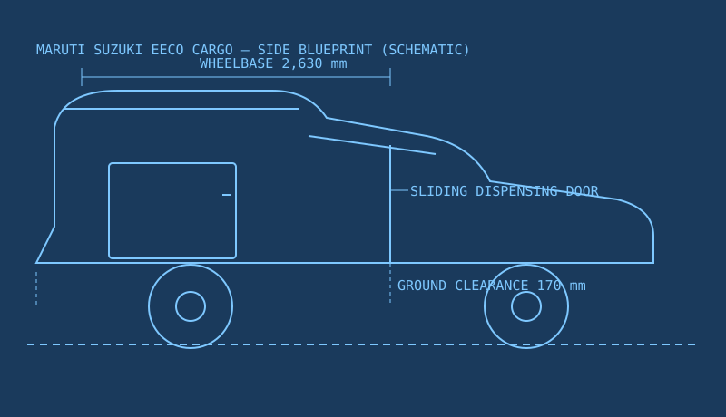
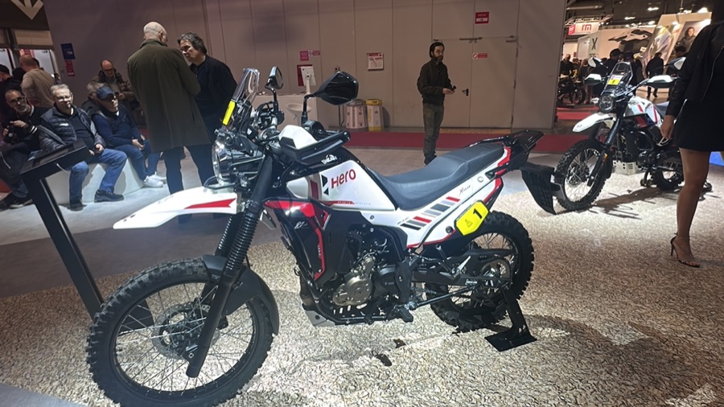
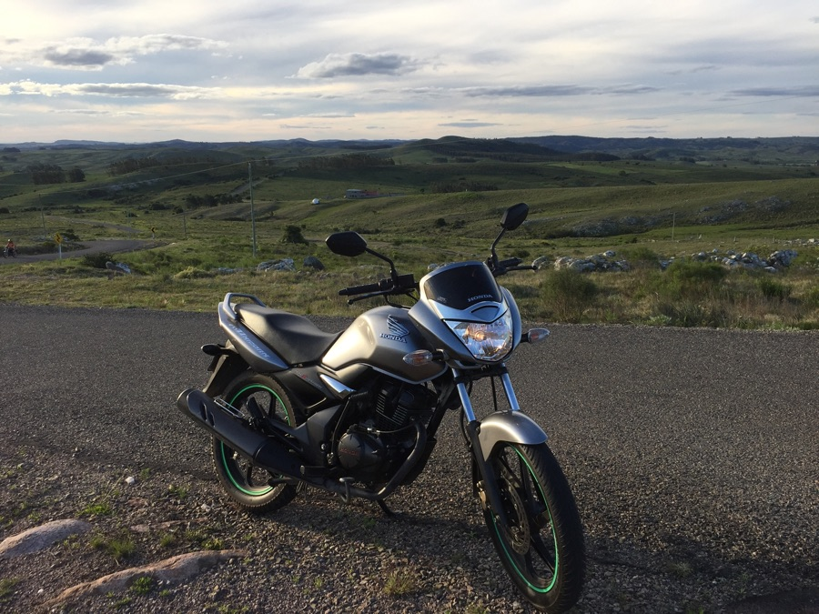
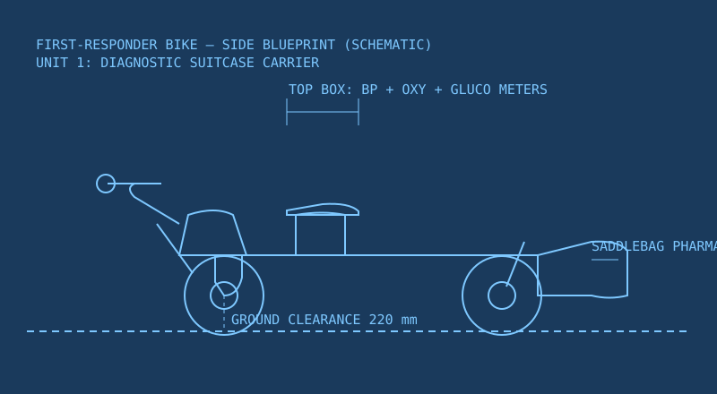

Rugged mobile clinics that reach where roads don't. Tap any vehicle for photos, blueprints, and full details.
Fleet vehicles
Every vehicle is chosen to survive broken mud tracks, sandy riverbeds, and mountain roads — and to carry a working clinic inside.
🚗
Mahindra Bolero Camper 4x4
Our flagship mobile clinic. Extreme off-road capability, custom clinic canopy, secure medicine locker.
Tap for photos & blueprint ↓
🚚
Maruti Suzuki Eeco Cargo
High ground clearance for narrow village lanes, CNG option, sliding-door medicine dispensing window.
Tap for photos & blueprint ↓
🚲
First-Responder Bike Fleet
Two rugged motorcycles for zones no four-wheeler can reach — collapsed bridges, forest paths, riverbeds.
Tap for photos & blueprint ↓
Hub-and-spoke stationing
We run on the same hub-and-spoke model proven across rural India. A central base hub holds specialists, diagnostics, and bulk medicine stock. From it, mobile spokes travel to villages on a fixed weekly schedule — predictable, so patients always know when we come.
🏢
Central Hub (Taluk Town)
The district-level base: consulting rooms, specialist doctors on call, laboratory tie-ups, and bulk medicine warehousing.
Tap for details ↓
🏛
Community Health Centre (CHC) Partner
We station alongside the nearest government CHC for emergency referrals, maternity support, and diagnostics.
Tap for details ↓
🏛
Primary Health Centre (PHC) Spokes
Village-level stops where our mobile unit camps weekly, handling routine check-ups, refills, and medicine dispensing.
Tap for details ↓
Weekly village schedule (sample loop)
A predictable 5-village loop. Villages shown are examples — the final loop is set with each Gram Panchayat before launch.
Monday
Village A — school ground camp, full clinic
Tuesday
Village B — community hall, chronic care + refills
Wednesday
Village C — school ground camp, full clinic
Thursday
Village D — panchayat hall, medicines + minor care
Friday
Village E — full clinic + follow-up from earlier week
Saturday
Central hub day — stock-up, lab samples, specialist reviews
Sunday
Rest / emergency on-call only
Route map
The schematic below shows how the hub connects to each village spoke. The mobile unit leaves the hub on Monday, completes the 5-village loop, and returns every Saturday to restock.

Hub-and-spoke route map — central hub at taluk town, five village spokes (Mon–Fri), CHC partner, weekly return for stock-up.
Vehicle cost comparison
Buying and running each option, side by side. All values are estimates from the project's budget blueprint.
Option
Purchase
Fuel
Maintenance
Terrain reach
Bolero Camper 4x4
₹3.5–4.2 L (used)
Diesel ~12 km/L
Low — parts everywhere
Extreme: mud, floods, mountains
Eeco Cargo
₹5.3–5.6 L (new)
Petrol/CNG ~15–20 km/L
Very low
Moderate: narrow lanes, flat roads
Bike fleet (x2)
₹3.5–4.0 L total
Petrol ~40–45 km/L
Low
Extreme: no-road zones
The Eeco is the budget choice for flat terrain; the Bolero 4x4 is the flagship for all-weather reach; the bike fleet handles the last-mile zones no four-wheeler can enter. Many networks run a 4x4 plus a bike pair.
Want a camp in your village?
Tell your panchayat to reach us — we'll add you to the loop.
Why we chose it: The Mahindra Bolero Camper 4x4 is the gold standard for rural India's worst roads. Its four-wheel drive handles deep mud, seasonal floods, and unpaved mountain roads where ordinary vans get stuck. It has been the backbone of rural transport across India for decades, which means spare parts are available in almost every sub-district town — a critical advantage when you're far from a service centre.
How it becomes a clinic
The open rear cargo bed is fitted with a locally fabricated canopy that houses a secure, lockable medicine locker, a fold-down diagnostic counter, and an external folding patient shade. Patients walk up to the counter at the back, speak to the nurse, and receive medicine through a window without entering the vehicle.
Key specifications
Engine 2.5L diesel, ~75 bhp
Drive 4x4 with transfer case
Payload ~1,200 kg (canopy + stock + staff)
Seating Cab 2+3; rear converted to clinic
Used cost ₹3.5–4.2 lakh (3–5 yrs old)
Ground clearance ~200 mm
Best for Deep mud, floods, mountain roads

Side blueprint — schematic. Wheelbase 2,680 mm; rear canopy carries the medicine locker and diagnostic counter.

Narrow lanes
CNG option
Low running cost
Why we chose it: The Maruti Suzuki Eeco is India's most common commercial van, built for the same streets we serve. Its high ground clearance and compact turning radius let it navigate narrow village alleyways that larger vans can't enter. The factory CNG option cuts fuel cost by roughly half compared to diesel — crucial for keeping a non-profit self-sustaining.
How it becomes a clinic
The factory sliding side door becomes a natural, secure medicine dispensing window. A partition separates the driver's cabin from the clinic area in the rear, where shelving holds medicines, and a fold-down table acts as the diagnostic desk. Patients are served through the sliding window while standing safely outside.
Key specifications
Engine 1.2L petrol / factory-fitted CNG
Drive Rear-wheel drive
Payload ~700 kg
Seating Cargo variant: 2 seats + cargo bay
New cost ₹5.3–5.6 lakh ex-showroom
Ground clearance ~170 mm
Best for Flat rural terrain, narrow lanes, fuel economy

Side blueprint — schematic. Sliding door doubles as the medicine dispensing window; rear bay is shelved for stock.


Extreme terrain
Zero-infrastructure
2 nimble units
Why we chose them: In the most remote zones there are no roads at all — only collapsed bridges, forest walking paths, and rocky riverbeds. A bike fleet (Hero Xpulse 200 + Honda Unicorn) is the only vehicle that fits. The Hero Xpulse 200 is purpose-built for rough, unpaved terrain with long-travel suspension. The Honda Unicorn is one of the most reliable commuter bikes in India, ideal for carrying payload on flatter stretches.
How they split the clinic
The fleet splits into two nimble units: Bike 1 carries a portable smart diagnostic suitcase (tablet + BP monitor + pulse oximeter + glucometer) in a rugged top box. Bike 2 carries a heavy-duty saddlebag acting as the mobile pharmacy. Together they deliver a basic clinic to the village square, treat mild cases on the spot, and flag anything serious back to the four-wheeler or hub.
Key specifications
Xpulse 200 engine 199cc single, ~19 bhp
Unicorn engine 162.7cc single, ~12.9 bhp
Xpulse suspension Long-travel front fork, 220 mm clearance
Unicorn payload Up to 130 kg with saddlebags
Total cost ₹3.5–4.0 lakh for two bikes
Fuel ~40–45 km/l each
Best for Collapsed bridges, forest paths, riverbeds

Side blueprint — schematic. Unit 1: diagnostic top box. Unit 2: saddlebag pharmacy.
Specialists on call
Medicine warehouse
Referral centre
What happens here: The central hub is the district-level base of the network. It holds consulting rooms, keeps specialist doctors on call for complex cases, and warehouses bulk medicine stock so the mobile units never run dry. It is the 'hub' in the hub-and-spoke model — every spoke (village unit) reports here.
Key roles
Consultations In-person specialist clinics for referred patients
Diagnostics Lab tie-ups for blood tests and imaging
Stock Bulk generic medicine warehousing & batch tracking
Coordination Schedules every village loop and dispatches units
Emergency 24/7 call line routing to doctors and ambulances
Emergency referrals
Maternity support
What this partnership means: The Community Health Centre (CHC) is the government's block-level hospital. Instead of duplicating its work, we station alongside it. When our mobile unit finds a case beyond its scope — an emergency, a high-risk pregnancy, or a surgical need — we refer directly to the CHC and help the patient get there.
Key roles
Referrals Immediate handoff for emergencies
Maternity Support for delivery care coordination
Diagnostics Shared access to lab and X-ray facilities
Medicine backup Cross-stocking for hard-to-find items
Weekly camps
Chronic care refills
What happens at each stop: Primary Health Centres are the village-level foundation of public health. Our mobile unit camps beside each PHC on its scheduled day, handling routine check-ups, blood-pressure and sugar tracking, and repeat medicine refills for chronic patients — so elderly residents never have to travel to town just for their regular tablets.
Key roles
Routine care Check-ups and common illness treatment
Chronic refills Monthly diabetes & BP medicine supply
Awareness Nutrition, hygiene, and water-safety talks